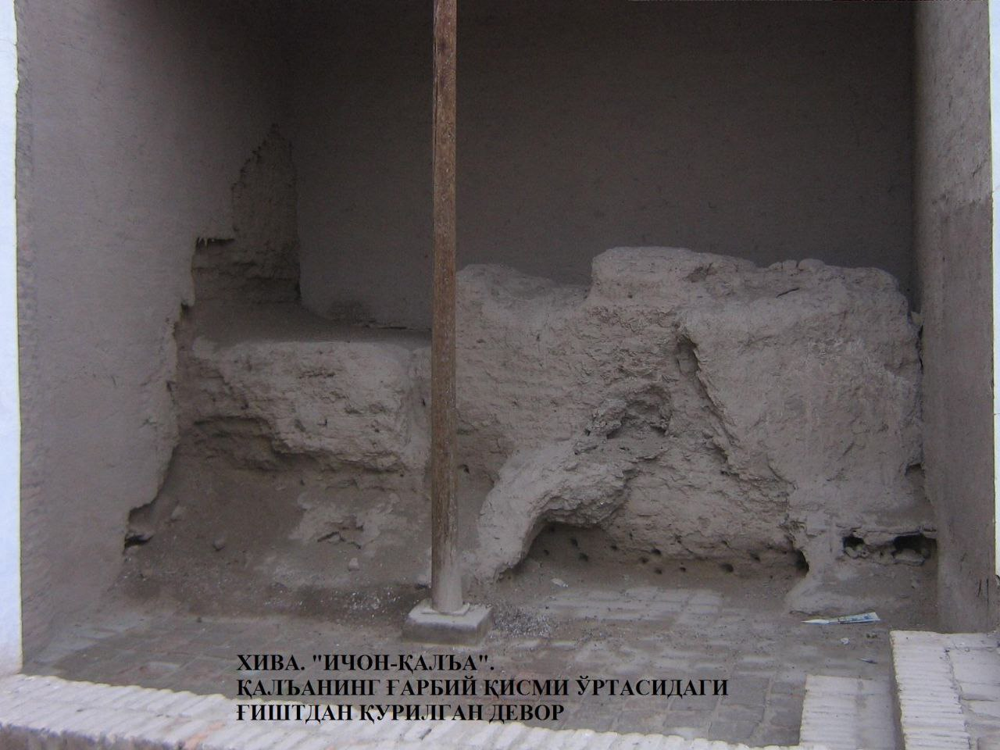

"ICHAN QAL’ANING GʻARBIY QISMI O‘RTASIDAGI DEVOR"
1. Me’moriy inshootning nomi:
"ICHAN QAL’ANING GʻARBIY QISMI O‘RTASIDAGI DEVOR"
2. Me’moriy inshoot tiklangan yil:
mil.av.V-IV asrlarga oid.
3. Me’moriy inshoot joylashgan manzil:
ICHAN QAL’ANING GʻARBIY QISMI O‘RTASIDAGI DEVOR.
4. Me’moriy inshootning qurilish materiallari:
Xom g‘isht, paxsa - guvala, qum, yog‘och
5. Inshootning bosh fasadi h.k.lar:

6. Me’moriy inshootning o‘lchamlari
qazish ishlari 577 m2 maydonda amalga oshirilgan
7. Me’moriy inshoot to‘g‘risida tarixiy ma’lumot:
O‘zR FA Qoraqalpog‘iston filiali arxeologiya bo‘limi xodimlari tomonidan Ko‘hna-Arkning shimoliy-g‘arbiy burchagida Oq Shayx bobo tepaligi yonida M.Mambetullayev, V.Yagodinlar boshchiligida olib borilgan arxeologik tadqiqotlar davomida aniqlangan.
577 m2 maydonda amalga oshirilgan qazish ishlari bu yerda 10 ta tarixiy davrga oid qurilish sathini aniqlash imkonini berdi. Natijada birinchi qurilish sathida qum materik ustiga barpo etilgan eng qadimgi mudofaa devori qoldig‘i ochib o‘rganilgan. Paxsa poydevor ustiga yirik hajmdagi (40-43x41-44x9-13 sm) xom g‘ishtlardan terilgan ikki qatorli, ya’ni tashqi va ichki devorlardan tashkil topgan mudofaa devori barpo etilgan. Pol sathidan topilgan xum, xumcha va qizil rangli ko‘zalar qoldiqlari mil.av.V-IV asrlarga taalluqli bo‘lib, devor ham aynan shu sana bilan belgilanadi.
Demak, Ichon-qal’aning hozirgi devorlari eng qadimgi devorlar o‘rnida barpo etilgan bo‘lib, eng qadimgi shahar hududini qamrab oladi.